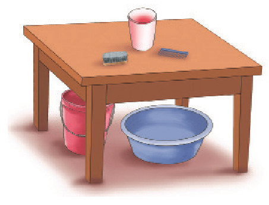
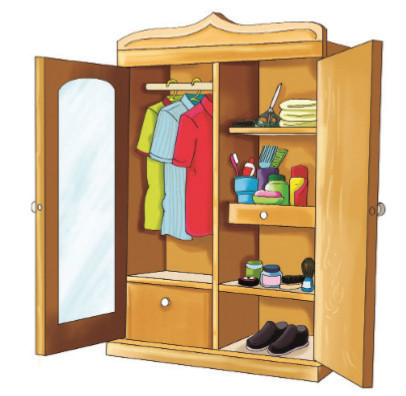

Chunguza Vielelezo namba 2(a) na (b), kisha jibu maswali yanayofuata.

Kielelezo namba 2 (a): Vifaa vya usafi

Kielelezo namba 2 (b): Mavazi na vifaa vya usafi
Maswali
1. Eleza ulichojifunza kupitia Vielelezo namba 2(a) na (b).
2. Kielelezo namba 2(a) kinaonesha vifaa gani vya usafi?
3. Kielelezo namba 2(b) kinaonesha vifaa vya usafi na mavazi katika hali gani?